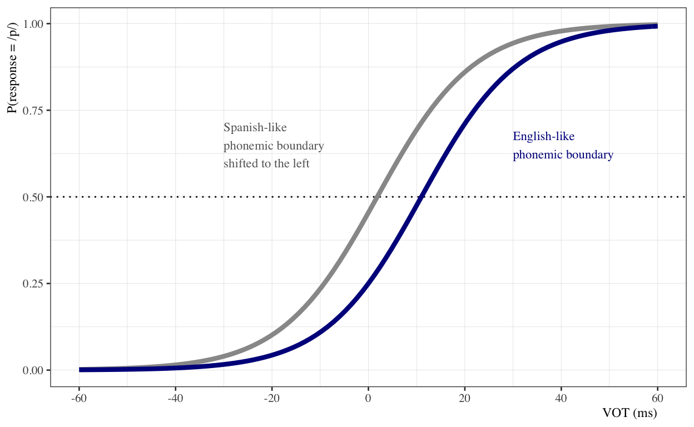
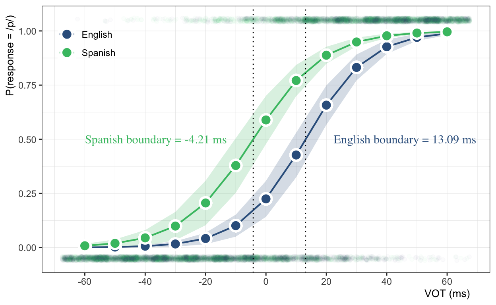
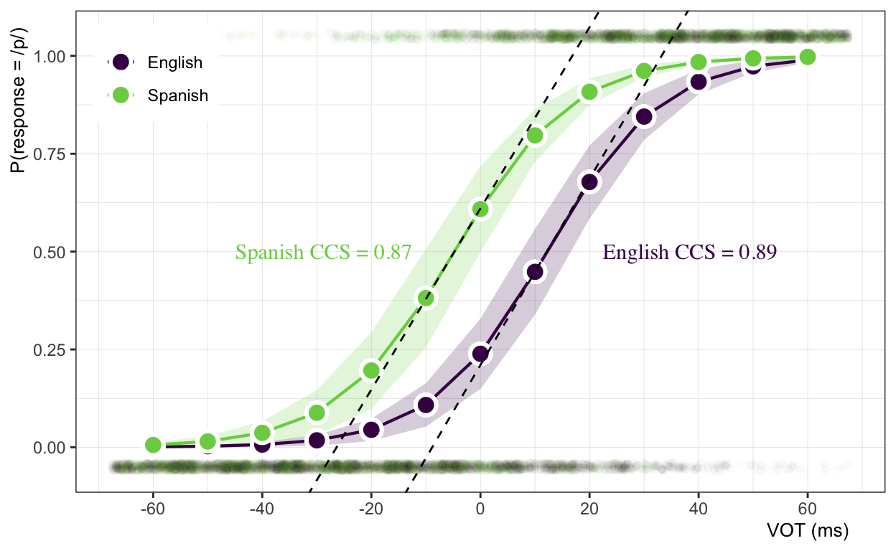
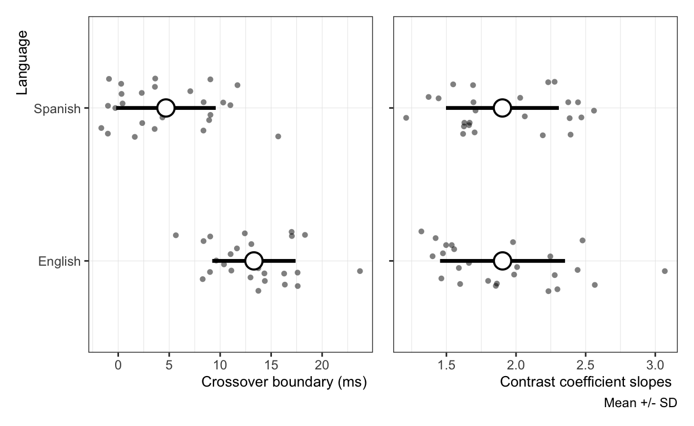
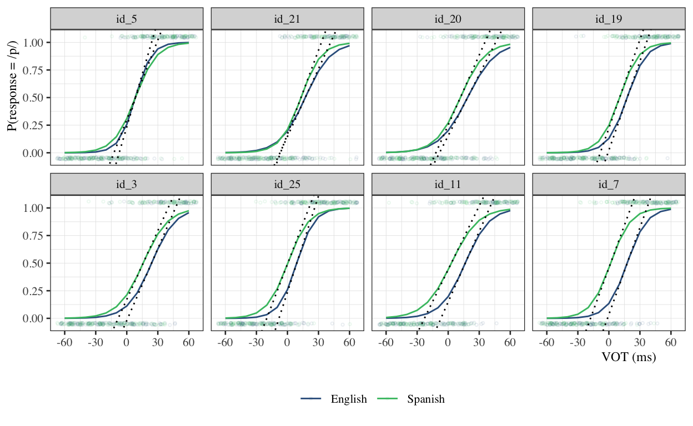

A bit of background
This post is about phonemic boundaries. Imagine we are interested in understanding stop voicing distinctions in English/Spanish bilinguals. English and Spanish have the same stop voicing contrasts at bilabial (/b, p/), coronal (/d, t/), and velar (/g, k/) place, but the phonetic realizations differ in a variety of ways. We will focus on voice-onset time (VOT). English has contrasts between lag stops (short-lag vs. long-lag VOT) and Spanish is a true voicing language, i.e., the contrasts are between phonetically voiced and short-lag stops.
| Language | Stops | Phonetic realization |
|---|---|---|
| English | /bdg/ | short-lag VOT |
| /ptk/ | long-lag VOT | |
| Spanish | /bdg/ | lead VOT |
| /ptk/ | short-lag VOT |
For an adult English speaker that wants to learn Spanish, one difficulty they encounter is related to VOT, that is, they have to learn the VOT patterns of Spanish, which differ from those of English. As a method of assessing phonological learning in second language acquisition (SLA), we might be interested in knowing if the boundary between a voiced/voiceless pair is different in English than in Spanish for a group of individuals who learned Spanish as adults.
One way researchers do this is by (re)synthesizing acoustic stimuli to create a VOT continuum and then asking learners to categorize the sounds. What we typically see is that for one end of the continuum all the stimuli are categorized as being ‘voiced’ and then at some point there is a shift to ‘voiceless’. Where this shift occurs is what we are after in this post.

The shift usually occurs further to the left for Spanish speakers than for English speakers, which is a consequence of the phonetic nature of the voicing contrasts, i.e., lead vs. short-lag (Spanish) or short-lag vs. long-lag (English). So, for an adult English speaker that is proficient in Spanish, one might expect different identification functions depending on which language they are identifying, Spanish or English.
In this post I am going to simulate data from this type of experiment and analyze them in a variety of ways. One fun detail, the experimental design assumes that the participants are always identifying the same stimuli, but we will tell them that they are hearing a different language, Spanish or English, in different experimental sessions.
These are the packages I will primarily be using:
Getting data
The first thing we need to do is get some data. In this post I am going to simulate data that is similar to the output you would get from a two-alternative forced choice (2AFC) task, but before we simulate we need to discuss the experimental paradigm a bit so that everything makes sense.
A 2AFC task is quite simple. The participant is presented something—in this case auditory stimuli—and then make a binary decision about it.
In this particular hypothetical experiment participants are presented stimuli that is randomly drawn from a VOT continuum ranging from -60 to 60 ms in 10 ms steps (that’s 13 steps total). We will present the entire continuum 15 times, so each participant will provide 195 responses. This would be an extremely boring experiment, but that’s another discussion. We will assume the experiment is given in two sessions, a Spanish session and an English session. The only difference between sessions is that the participants will be told that they are going to categorize English stimuli in the English session and Spanish stimuli in the Spanish session. Importantly, the actual continuum of stimuli they hear is exactly the same. Tricky, right?
We will simulate data for 25 participants, and two language sessions (or language modes), English and Spanish. If you’re doing the math, that is 25 participants \(\times\) 13 steps \(\times\) 15 item repetitions \(\times\) 2 language modes, which gives us a data set with a grand total of 9750 responses (i.e., 9750 rows in the dataframe). (Note: If you aren’t interested in the whole simulation process just skip the next section.)
Specifying the model
Our criterion is binary (0/1) responses. Specifically, this refers to whether the participant responds ‘voiced’ (0) or ‘voiceless’ (1) to each pull from the VOT continuum. For this reason we will simulate from the binomial distribution. Our model will look something like this:
\[ \begin{aligned} response_{i} \sim & \ Binomial(p_{i}, m_{i}) \\ logit(p_{i}) = & \ \beta_{0} + \beta_{1} * VOT_{1} + \beta_{2} * I_{(language_{i} = Spanish)2} + \beta_{3} * VOT_{1} * I_{2} \end{aligned} \]
…where we analyze the log odds of ‘voiceless’ responses as a function of VOT, i.e., the step in the continuum, language mode (if they think they are hearing English or Spanish) and the interaction between the two.
# Set seed for reproducibility
set.seed(20210514)
# dataframe params
n_ids <- 25
n_steps <- 13
n_lang <- 2
n_item_reps <- 15
# Set up dataframe
id <- rep(glue::glue("id_{1:n_ids}"), each = n_steps * n_lang)
vot <- rep(seq(-60, 60, 10), times = n_ids * n_lang)
language <- rep(c("English", "Spanish"), each = n_steps, times = n_ids)
dat <- data.frame(id, vot, language, n_item_reps)
# Model params
b0 <- -1.10 # intercept
b1 <- 0.09 # slope VOT
b2 <- 0.80 # language effect
b12 <- -0.06 # slope adj. for Spanish
id_var <- 0.20 # id variability
step_var <- 0.50 # step variability
lang_var <- 0.11 # lang variability
# Simulate random effects
id_eff <- rep(rnorm(n = n_ids, mean = 0, sd = id_var), each = n_steps * n_lang)
step_eff <- replicate(n = n_ids, rep(rnorm(n_steps, 0, step_var), times = n_lang),
simplify = F) %>%
unlist()
# Get log odds from linear predictor and convert to probability
log_odds <- b0 +
b1 * vot +
b2 * (language == "Spanish") +
b1 * vot * b12 * (language == "Spanish") +
id_eff + step_eff
prop <- plogis(log_odds)
# Generate binomial responses
dat$response <- rbinom(n = n_ids * n_steps * n_lang, size = n_item_reps, prob = prop)
# Expand binomial responses to binary
dat_long <- dat %>%
nest(data = c(response, n_item_reps)) %>%
mutate(response = map(data, ~c(rep(1, .x$response),
rep(0, .x$n_item_reps - .x$response)))) %>%
select(-data) %>%
unnest(response) %>%
group_by(id, vot, language) %>%
mutate(item_rep = seq_along(vot)) %>%
ungroup() %>%
mutate(item_rep = (item_rep - mean(item_rep)) / sd(item_rep),
vot_std = (vot - mean(vot)) / sd(vot))
The code above simulates the data set. I won’t go into detail about how it works (maybe for another post), but I do want to point out two things: 1) I’ve added an item_rep variable to keep track of what repetition (out of 15) a given response comes from, and 2) I have standardized vot (vot_std) and item_rep in order to improve computational efficiency of the model. It will be important to keep this in mind when we begin analyzing and plotting the results.
Here is what the output of one block of the experiment for one participant looks like:
| id | vot | language | response |
|---|---|---|---|
| id_1 | -60 | English | 0 |
| id_1 | -50 | English | 0 |
| id_1 | -40 | English | 0 |
| id_1 | -30 | English | 0 |
| id_1 | -20 | English | 0 |
| id_1 | -10 | English | 0 |
| id_1 | 0 | English | 0 |
| id_1 | 10 | English | 1 |
| id_1 | 20 | English | 1 |
| id_1 | 30 | English | 1 |
| id_1 | 40 | English | 1 |
| id_1 | 50 | English | 1 |
| id_1 | 60 | English | 1 |
Looks good. Now we are ready to fit the model.
Multilevel logistic regression model
As mentioned above, our data is binary and we have repeated measures. We will fit a multilevel logistic regression model to account for nesting in the data. A key part here is the random effects structure, which will allow us to do some interesting individual differences analyses post-hoc.
# Fit partial pooling model
mod <- glmer(
formula = response ~ vot_std * language +
(1 | id) +
(1 + vot_std + item_rep | id:language),
control = glmerControl(optimizer = "bobyqa", optCtrl = list(maxfun = 2e6)),
family = binomial(link = "logit"),
data = dat_long
)
| response | |||
|---|---|---|---|
| Predictors | Log-Odds | CI | p |
| (Intercept) | -1.24 | -2.17 – -0.30 | 0.009 |
| vot_std | 3.54 | 2.57 – 4.51 | <0.001 |
| language [Spanish] | 1.60 | 1.22 – 1.98 | <0.001 |
|
vot_std * language [Spanish] |
-0.34 | -0.86 – 0.19 | 0.205 |
| Random Effects | |||
| σ2 | 3.29 | ||
| τ00 id:language | 2.46 | ||
| τ00 id | 0.46 | ||
| τ11 id:language.vot_std | 16.18 | ||
| τ11 id:language.item_rep | 13.57 | ||
| ρ01 id:language.vot_std | -0.98 | ||
| ρ01 id:language.item_rep | 0.94 | ||
| ICC | 0.85 | ||
| N id | 25 | ||
| N language | 2 | ||
| Observations | 9750 | ||
| Marginal R2 / Conditional R2 | 0.349 / 0.904 | ||
We won’t focus on interpreting the output. Instead let’s use the model to generate predictions and plot those.
# Setup new dataframe to predict on
new_dat <- select(dat, -n_item_reps, -response) %>%
mutate(vot_std = (vot - mean(vot)) / sd(vot))
# Get model predictions and SE
fits <- predictSE(mod, new_dat) %>%
as_tibble %>%
mutate(ymin = fit - se.fit, ymax = fit + se.fit) %>%
bind_cols(new_dat)
# Plot it
p_sigmoids <- fits %>%
ggplot(., aes(x = vot_std, y = fit, color = language, fill = language)) +
geom_ribbon(aes(ymax = ymax, ymin = ymin),
alpha = 0.2, color = NA, show.legend = F) +
geom_line(size = 0.75) +
geom_point(color = "white", stroke = 1.5, size = 4, pch = 21) +
geom_jitter(data = dat_long,
width = 0.2, height = 0.01, alpha = 0.02, pch = 21,
aes(x = vot_std,
y = if_else(response == 1, response + 0.05, response - 0.05))) +
labs(y = "P(response = /p/)", x = "VOT (ms)") +
scale_y_continuous(breaks = seq(0, 1, 0.25)) +
scale_x_continuous(breaks = unique(fits$vot_std)[c(TRUE, FALSE)],
labels = seq(-60, 60, 20)) +
scale_fill_viridis_d(name = NULL, begin = 0.3, end = 0.7) +
scale_color_viridis_d(name = NULL, begin = 0.3, end = 0.7) +
ds4ling::ds4ling_bw_theme() +
theme(legend.position = c(0.1, 0.87), legend.background = element_blank())
p_sigmoids

Cool. We can see that in our simulated data the Spanish sigmoid function is shifted to the left with regard to the English sigmoid function. This equates to more ‘voiceless’ responses when the participants believe they are hearing Spanish.
Category boundaries
One way this literature has assessed categorical perception in bilinguals is by calculating and comparing the 50% cross over point for each language. This is the point where the probability of responding ‘voiceless’ is exactly 0.5. If we just eyeball the plot above, we can guess that this is around -5 ms for Spanish and around 13 ms for English, but we can do better than just eyeballing it. We will use the following formula to calculate the boundary, which we’ll just call the “crossover” (CO), between /b-p/ for each language session:
\[ CO_{En} = \frac{\beta_{0}}{\beta_{1}} * -1 \]
This means, for English, we can calculate the 50% crossover by dividing the intercept by the slope for VOT and multiplying by -1. In case it’s not clear, intercept and slope refer to the fixed effect parameters we just estimated in the model. We can grab those estimates using fixef.
fixef(mod)
(Intercept) vot_std
-1.237854 3.538825
languageSpanish vot_std:languageSpanish
1.598023 -0.338594 The fixef function returns a vector containing the parameter estimates. Since English is the reference level, we just need the first two elements of the vector and we can calculate the boundary like this:
So the boundary is at 0.35 standard deviations above the mean (0). We can make this value easier to interpret by back-transforming to milliseconds. We do this by adding the mean of the original VOT vector of the dataframe and multiplying by the standard deviation:
# Calculate En CO in ms (note the mean is 0, so we could skip that)
(en_co + mean(dat_long$vot)) * sd(dat_long$vot)
(Intercept)
13.0887 So the English boundary is at about 13.09 ms (my guess was pretty close!). Let’s calculate the boundary for Spanish and plot them:
# Add language effect on the intercept and slope adj for language == Spanish
sp_co <- (fixef(mod)[1] + fixef(mod)[3]) / (fixef(mod)[2] + fixef(mod)[4]) * -1
sp_co
(Intercept)
-0.1125447 # Create tibble with boundaries and text
co_text <- tribble(
~'vot_std', ~'fit', ~'language', ~'text',
-1.6, 0.5, "Spanish", paste0("Spanish boundary = ", round(sp_co * sd(dat_long$vot), 2), " ms"),
0.6, 0.5, "English", paste0("English boundary = ", round(en_co * sd(dat_long$vot), 2), " ms")
)
# Add to base plot
p_sigmoids +
geom_vline(xintercept = c(en_co, sp_co), lty = 3) +
geom_text(data = co_text, aes(label = text),
hjust = 0, size = 4, family = "Times")

Contrast coefficient slopes
Another way we can assess how the acoustic stimuli are categorized is by looking at the slope of the sigmoid functions at the category boundary (i.e., the 50% crossover point). We do this by calculating the contrast coefficient slope (CCS). Essentially the CCS in the logistic space is related to the slope of the sigmoid function and represents the rate of change from one category to another (i.e., from /b/ to /p/ in our case) in the probability space.
Morrison (2007) describes CCSs as “indicators of the crispness of the boundary between the two categories” (p. 232). Native speakers typically have crisp boundaries between categories, whereas non-native speakers can have “fuzzier” boundaries for a number of reasons.
I will spare you the calculus, but in a few words the CCS in the probability space is the partial derivative of the slope of the sigmoid function at its steepest point. Conveniently, the steepest value of the slope in the binomial case is when the probability of the criterion is 0.5, i.e., at the crossover boundary. We can calculate the CCS by multiplying the slope of the continuous measure by 0.25:
\[ CCS_{En} = \beta_{VOT} * 0.25 \]
So for English, the CCS is calculated as:
en_ccs <- fixef(mod)[2] * 0.25
en_ccs
vot_std
0.8847064 This means that when the the probability of responding ‘voiceless’ is 0.5, the slope of the sigmoid for English is 0.88 in the probability space. We can calculate this for both languages and plot the lines:
sp_ccs <- (fixef(mod)[2] + fixef(mod)[4]) * 0.25
ccs_text <- tribble(
~'vot_std', ~'fit', ~'language', ~'text',
-1.2, 0.5, "Spanish", paste0("Spanish CCS = ", round(sp_ccs, 2)),
0.6, 0.5, "English", paste0("English CCS = ", round(en_ccs, 2))
)
p_sigmoids +
geom_abline(intercept = 0.5 - en_ccs * en_co, slope = en_ccs, lty = 2) +
geom_abline(intercept = 0.5 - sp_ccs * sp_co, slope = sp_ccs, lty = 2) +
geom_text(data = ccs_text, aes(label = text),
hjust = 0, size = 4, family = "Times")

As you can see, the two category boundaries are ‘crisp’ in both cases. This is because I simulated the data to be this way, but this leads us to more interesting territory… we can explore crossover boundaries and contrast coefficient slopes for individuals. Perhaps we are interested in 50% crossover differences as a function of language dominance, or boundary crispness as a function of proficiency. We’ll look at a few ways to do that now.
Individual differences
There are at least 2 ways to calculate 50% crossover boundaries and contrast coefficient slopes for individual participants. One method is to use the random effects from the omnibus model we fit above (i.e., mod). Another method is fit a logistic regression to the data of each participant. I’ll go with this no-pooling method, but one should certainly give careful thought to both methods and decide which makes the most sense for the research questions of interest.
We can easily fit a model to each individual using the lmList function from the lme4 package:
# Fit no pooling model(s)
no_pool_full <- lmList(response ~ vot_std * language | id, family = "binomial",
data = as.data.frame(dat_long))
I’ll use the coef and head functions to take a peak at the structure of the resulting object.
coef(no_pool_full) %>% head
(Intercept) vot_std languageSpanish vot_std:languageSpanish
id_1 -1.0814034 3.663940 0.6900609 -0.30420433
id_10 -1.1861547 3.059800 1.2626094 -0.24044950
id_11 -1.4045661 3.184317 1.1704759 -0.30283595
id_12 -0.5402269 3.552218 0.6148052 -0.80768856
id_13 -1.0842951 3.457762 0.6257084 -0.46301851
id_14 -0.6622088 2.935729 0.5329204 -0.07208159Nice! With a little bit of wrangling and the formulas we looked at previously, we can calculate the CO and CCS of each individual for English and Spanish.
id_diffs <- no_pool_full %>%
coef() %>%
as_tibble() %>%
transmute(
id = rownames(coef(no_pool_full)),
int_English = `(Intercept)`,
vot_English = vot_std,
int_Spanish = int_English + languageSpanish,
vot_Spanish = vot_English + `vot_std:languageSpanish`,
co_English = int_English / vot_English * -1,
co_Spanish = int_Spanish / vot_Spanish * -1,
ccs_English = vot_English * 0.25,
ccs_Spanish = vot_Spanish * 0.25) %>%
select(-vot_English, -vot_Spanish) %>%
pivot_longer(
cols = -id,
names_to = c(".value", "language"),
names_sep = "_"
) %>%
mutate(co_ms = co * sd(dat_long$vot))
head(id_diffs)
# A tibble: 6 x 6
id language int co ccs co_ms
<chr> <chr> <dbl> <dbl> <dbl> <dbl>
1 id_1 English -1.08 0.295 0.916 11.0
2 id_1 Spanish -0.391 0.116 0.840 4.36
3 id_10 English -1.19 0.388 0.765 14.5
4 id_10 Spanish 0.0765 -0.0271 0.705 -1.01
5 id_11 English -1.40 0.441 0.796 16.5
6 id_11 Spanish -0.234 0.0812 0.720 3.04Now we are ready to make some plots.
# COs
p_co <- id_diffs %>%
ggplot(., aes(x = co_ms, y = language)) +
geom_jitter(width = 0.1, height = 0.2, alpha = 0.5, pch = 16) +
stat_summary(fun.data = mean_sdl, geom = "pointrange", pch = 21,
fill = "white", size = 1.2, fun.args = list(mult = 1)) +
labs(y = "Language", x = "Crossover boundary (ms)", caption = "") +
ds4ling::ds4ling_bw_theme()
# CCSs
p_ccs <- id_diffs %>%
ggplot(., aes(x = ccs, y = language)) +
geom_jitter(width = 0.1, height = 0.2, alpha = 0.5, pch = 16) +
stat_summary(fun.data = mean_sdl, geom = "pointrange", pch = 21,
fill = "white", size = 1.2, fun.args = list(mult = 1)) +
labs(y = NULL, x = "Contrast coefficient slopes", caption = "Mean +/- SD") +
ds4ling::ds4ling_bw_theme() +
theme(axis.text.y = element_blank(), axis.ticks.y = element_blank())
p_co + p_ccs

We can also plot the sigmoids of individuals along with the 50% crossovers, as well as the contrast coefficient slopes. Let’s find the individuals with the largest and smallest differences between English and Spanish boundaries, plus 6 more participants at random.
# Calculate boundary diffs
co_diffs <- id_diffs %>%
select(id, language, co) %>%
pivot_wider(names_from = language, values_from = co) %>%
mutate(diff = English - Spanish)
# Find smallest and largest diffs
co_min_max <- c(
slice_max(co_diffs, diff, n = 1) %>% pull(id),
slice_min(co_diffs, diff, n = 1) %>% pull(id)
)
# Vector of min, max, plus 6 random subjects
n_8 <- c(
co_min_max,
filter(dat_long, (!id %in% co_min_max)) %>%
distinct(id) %>%
sample_n(6) %>% pull
)
# Use diff column to order from smallest to largest
ordered_8 <- co_diffs %>%
filter(id %in% n_8) %>%
arrange(diff) %>%
pull(id)
co_base <- dat_long %>%
filter(id %in% n_8) %>%
mutate(id = forcats::fct_relevel(id, ordered_8)) %>%
ggplot(., aes(x = vot_std, y = response, color = language)) +
facet_wrap(~id, nrow = 2) +
geom_jitter(width = 0.2, height = 0.01, alpha = 0.1, pch = 21, size = 0.6,
aes(y = if_else(response == 1, response + 0.05, response - 0.05))) +
stat_summary(fun = mean, geom = "line",
aes(y = fitted(no_pool_full)[names(fitted(no_pool_full)) %in% ordered_8])) +
labs(y = "P(response = /p/)", x = "VOT (ms)") +
scale_y_continuous(breaks = seq(0, 1, 0.25)) +
scale_x_continuous(breaks = unique(dat_long$vot_std)[c(TRUE, FALSE, FALSE)],
labels = seq(-60, 60, 30)) +
scale_fill_viridis_d(name = NULL, begin = 0.3, end = 0.7) +
scale_color_viridis_d(name = NULL, begin = 0.3, end = 0.7) +
ds4ling::ds4ling_bw_theme(base_family = "Times", base_size = 10) +
theme(legend.position = "bottom",
strip.background = element_blank(),
strip.placement = "outside")
co_base +
geom_vline(
data = filter(id_diffs, id %in% n_8) %>%
mutate(id = forcats::fct_relevel(id, ordered_8)),
aes(xintercept = co, color = language), lty = 3, show.legend = F)

co_base +
geom_abline(
data = filter(id_diffs, id %in% n_8) %>%
mutate(id = forcats::fct_relevel(id, ordered_8)),
aes(intercept = 0.5 - co * ccs, slope = ccs, group = language), lty = 3,
show.legend = F)

Awesome! We can see that there are some individuals that have category boundaries in essentially the same place, while others show clear differences between English and Spanish. I simulated the data to have similar slopes (the VOT x language interaction), but we still see a bit of variability in CCS plot.
Wrapping up
I think that is enough for one post. We’ve seen that multilevel logistic regression is an awesome tool for exploring different aspects of bilingualism and second language acquisition. Category boundaries and contrast coefficient slopes are a few metrics I have found to be quite handy in my research.
Bonus
I mentioned that you could calculate the individual boundaries using the random effects from the omnibus model or fit a model to each individual. Crossover boundaries tend to be a bit unwieldy in the wild, i.e., when you aren’t simulating data with 15 item repetitions. It may be the case that having the regularization that comes with partial pooling is preferable when assessing different areas of individual differences. This is just as easy to do by using the ranef function with the original model object, mod.
ranef(mod)[[1]] %>%
tibble::rownames_to_column(var = "id") %>%
separate(col = id, into = c("id", "language"), sep = ":") %>%
pivot_wider(names_from = language,
values_from = c("(Intercept)", "vot_std", "item_rep")) %>%
transmute(
id = id,
int_English = fixef(mod)[1] + `(Intercept)_English`,
int_Spanish = fixef(mod)[1] + fixef(mod)[3] + `(Intercept)_Spanish`,
slope_English = fixef(mod)[2] + vot_std_English,
slope_Spanish = fixef(mod)[2] + fixef(mod)[4] + vot_std_Spanish,
co_English = int_English / slope_English * -1,
co_Spanish = int_Spanish / slope_Spanish * -1,
ccs_English = slope_English * 0.25,
ccs_Spanish = slope_Spanish * 0.25) %>%
select(-c(2:5)) %>%
head
# A tibble: 6 x 5
id co_English co_Spanish ccs_English ccs_Spanish
<chr> <dbl> <dbl> <dbl> <dbl>
1 id_1 0.374 0.182 1.96 1.89
2 id_10 0.356 -0.0329 1.85 1.19
3 id_11 0.369 0.0343 1.89 1.37
4 id_12 0.350 0.133 1.91 1.79
5 id_13 0.354 0.189 1.63 2.10
6 id_14 0.306 0.114 1.49 1.68Reproducibility information
About this document
This document was written in RMarkdown using distill.
Session info
devtools::session_info()$platform
setting value
version R version 4.0.3 (2020-10-10)
os macOS Big Sur 10.16
system x86_64, darwin17.0
ui X11
language (EN)
collate en_US.UTF-8
ctype en_US.UTF-8
tz America/New_York
date 2021-05-19 as.data.frame(devtools::package_info())[, c(3, 8)]
loadedversion date
academicWriteR 0.4.1 2021-03-30
AICcmodavg 2.3-1 2020-08-26
assertthat 0.2.1 2019-03-21
backports 1.2.1 2020-12-09
base64enc 0.1-3 2015-07-28
bayestestR 0.9.0 2021-04-08
boot 1.3-28 2021-05-03
broom 0.7.6 2021-04-05
bslib 0.2.4 2021-01-25
cachem 1.0.4 2021-02-13
callr 3.7.0 2021-04-20
checkmate 2.0.0 2020-02-06
cli 2.5.0 2021-04-26
cluster 2.1.2 2021-04-17
coda 0.19-4 2020-09-30
codetools 0.2-18 2020-11-04
colorspace 2.0-1 2021-05-04
crayon 1.4.1 2021-02-08
data.table 1.14.0 2021-02-21
DBI 1.1.1 2021-01-15
desc 1.3.0 2021-03-05
devtools 2.4.0 2021-04-07
digest 0.6.27 2020-10-24
distill 1.2.2 2021-02-20
downlit 0.2.1 2020-11-04
dplyr 1.0.5.9000 2021-04-29
ds4ling 0.7 2021-04-05
effectsize 0.4.4-1 2021-04-05
ellipsis 0.3.2 2021-04-29
emmeans 1.6.0 2021-04-24
emojifont 0.5.5 2021-04-20
estimability 1.3 2018-02-11
evaluate 0.14 2019-05-28
fansi 0.4.2 2021-01-15
farver 2.1.0 2021-02-28
fastmap 1.1.0 2021-01-25
forcats 0.5.1 2021-01-27
foreign 0.8-81 2020-12-22
Formula 1.2-4 2020-10-16
fs 1.5.0 2020-07-31
generics 0.1.0 2020-10-31
ggeffects 1.1.0 2021-04-30
ggplot2 3.3.3 2020-12-30
glue 1.4.2 2020-08-27
gridExtra 2.3 2017-09-09
gt 0.2.2 2020-08-05
gtable 0.3.0 2019-03-25
highr 0.9 2021-04-16
Hmisc 4.5-0 2021-02-28
htmlTable 2.1.0 2020-09-16
htmltools 0.5.1.1 2021-01-22
htmlwidgets 1.5.3 2020-12-10
insight 0.13.2 2021-04-01
jpeg 0.1-8.1 2019-10-24
jquerylib 0.1.4 2021-04-26
jsonlite 1.7.2 2020-12-09
knitr 1.33 2021-04-24
labeling 0.4.2 2020-10-20
latex2exp 0.5.0 2021-03-18
lattice 0.20-44 2021-05-02
latticeExtra 0.6-29 2019-12-19
lifecycle 1.0.0 2021-02-15
lme4 1.1-26 2020-12-01
magrittr 2.0.1 2020-11-17
MASS 7.3-54 2021-05-03
Matrix 1.3-3 2021-05-04
memoise 2.0.0 2021-01-26
minqa 1.2.4 2014-10-09
modelr 0.1.8 2020-05-19
munsell 0.5.0 2018-06-12
mvtnorm 1.1-1 2020-06-09
nlme 3.1-152 2021-02-04
nloptr 1.2.2.2 2020-07-02
nnet 7.3-16 2021-05-03
parameters 0.13.0 2021-04-08
patchwork 1.1.1 2020-12-17
performance 0.7.1 2021-04-09
pillar 1.6.0 2021-04-13
pkgbuild 1.2.0 2020-12-15
pkgconfig 2.0.3 2019-09-22
pkgload 1.2.1 2021-04-06
plyr 1.8.6 2020-03-03
png 0.1-7 2013-12-03
prettyunits 1.1.1 2020-01-24
processx 3.5.2 2021-04-30
proto 1.0.0 2016-10-29
ps 1.6.0 2021-02-28
purrr 0.3.4 2020-04-17
R6 2.5.0 2020-10-28
raster 3.4-10 2021-05-03
RColorBrewer 1.1-2 2014-12-07
Rcpp 1.0.6 2021-01-15
remotes 2.3.0 2021-04-01
rlang 0.4.11 2021-04-30
rmarkdown 2.7.1 2021-02-20
rpart 4.1-15 2019-04-12
rprojroot 2.0.2 2020-11-15
rstudioapi 0.13 2020-11-12
sass 0.3.1 2021-01-24
scales 1.1.1 2020-05-11
sessioninfo 1.1.1 2018-11-05
showtext 0.9-2 2021-01-10
showtextdb 3.0 2020-06-04
sjlabelled 1.1.7 2020-09-24
sjmisc 2.8.6 2021-01-07
sjPlot 2.8.7 2021-01-10
sjstats 0.18.1 2021-01-09
snakecase 0.11.0 2019-05-25
sp 1.4-5 2021-01-10
statmod 1.4.35 2020-10-19
stringi 1.5.3 2020-09-09
stringr 1.4.0 2019-02-10
survival 3.2-11 2021-04-26
sysfonts 0.8.3 2021-01-10
testthat 3.0.2 2021-02-14
tibble 3.1.1 2021-04-18
tidyr 1.1.3 2021-03-03
tidyselect 1.1.1 2021-04-30
unmarked 1.0.1 2020-07-02
untidydata 0.1.1 2020-07-09
usethis 2.0.1 2021-02-10
utf8 1.2.1 2021-03-12
vctrs 0.3.8 2021-04-29
VGAM 1.1-5 2021-01-14
viridisLite 0.4.0 2021-04-13
withr 2.4.2 2021-04-18
xfun 0.22 2021-03-11
xtable 1.8-4 2019-04-21
yaml 2.2.1 2020-02-01